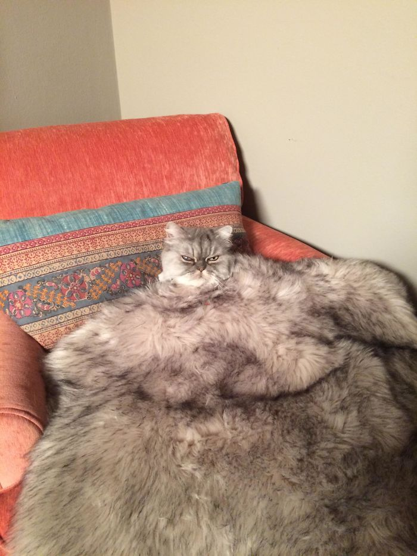

Striscia la Notizia, Ilary Blasi e la clamorosa sexy gaffe
 Chiudi menu Tuttosport.comNaviga le sezioni
Segui le Dirette
LiveI nostri social
Facebook Instagram Twitter TelegramContinua ad esplorare
Contattaci Faq RSS Mappa del Sito La Redazione Edizione Digitale Abbonamenti Faq Cookie Policy Privacy Policy Note legali Condizioni generali PubblicitàAbbonati a Tuttosport
L'edizione digitale del giornale, sempre con te
Ovunque ti trovi, tutte le informazioni su: partite, storie, approfondimenti, interviste, commenti, rubriche, classifiche, tabellini, formazioni, anteprime.
Sempre con te, come vuoi
ABBONATI ORA Leggi il giornaleTuttosport.com Tuttosport.com
Abbonati Cerca Live Leggi il giornale Abbonati ora / Attualit / SpettacoliStriscia la Notizia, Ilary Blasi e la clamorosa sexy gaffe
La moglie di Francesco Totti fuori controllo a Verissimo, dall'amica Silvia Toffanin: scopri cosa è successo
25 . 03 . 2021 11:37 1 min Ilary Blasi © MediasetIn questi giorni non si fa che parlare delle numerose gaffe di Ilary Blasi all'Isola dei Famosi . Striscia la notizia ha fatto notare però che la conduttrice Mediaset non è nuova a situazioni del genere. Qualche tempo fa, durante un'intervista a Verissimo , ha infatti messo in imbarazzo l'amica Silvia Toffanin con una battuta hot. "Donna impegnata, è difficile starle dietro ma sempre meglio che starle davanti" , ha fatto notare Gerry Scotti nel servizio del tg satirico di Antonio Ricci. Un riferimento alle parole che Ilary ha pronunciato a Verissimo: "Sì sì ma io gliel'appoggio sempre..." . Parole che hanno scatenato il boato in studio e che hanno lasciato di sasso la Toffanin, piuttosto imbarazzata dalla situazione. Nonostante gaffe e doppi sensi la Blasi piace, e molto anche. Da anni è una delle presentatrici più amate dal pubblico grazie al suo mix di simpatia, spontaneità e solarità.
Guarda la gallery Ilary Blasi in grande forma: sexy bikini in spiaggia
Da non perdere
Totti e Ilary in centro a Roma Canalis-Corvaglia, è guerra Tutte le news di SpettacoliAbbonati a Tuttosport
L'edizione digitale del giornale, sempre con te
Ovunque ti trovi, tutte le informazioni su: partite, storie, approfondimenti, interviste, commenti, rubriche, classifiche, tabellini, formazioni, anteprime.
Sempre con te, come vuoi
ABBONATI ORA Leggi il giornale